왜 시작했나
요즘 AI 인플루언서 릴스·쇼츠는 조회수가 잘 나온다. 중국의 팡타오쯔는 "전부 AI로 만든다"고 밝히고도 도우인 팔로워 40만을 모았고, 광고 단가는 동급 인간 인플루언서보다 높다. 20초에 약 3,500만 원, 화웨이 광고까지 받았다.
그래서 궁금했다. 저 '느좋' 감성 콘텐츠를, 내가 병목이 되지 않는 자동 파이프라인으로 뽑을 수 있을까.
2025 · 전사
작년에 배운 것
AriaLook이라는 AI 패션 쇼츠 채널을 4주 돌렸다. 43편을 만들어 총 조회 17,789회. 작업 파일 11GB에 영상 208개, 사진 61장. 크레딧은 수차례 충전했다. 숫자보다 아픈 건 과정이었다. 만드는 건 AI가 하는데, 확인은 내가 해야 했다. 사진마다 눈·코·손가락 개수를 셌고, 클립을 이어 붙일 때마다 얼굴이 달라졌다. 퇴근하고 돌리는 투잡의 병목이 GPU가 아니라 내 눈이라는 걸 그때 알았다. (회고: 검수 지옥 · 정산)
그래서 이번 실험의 목표는 콘텐츠가 아니었다. 목표는 시스템이다. 사람은 마지막에 고르기만 하면 되는 파이프라인.
08.14 · 두 세션
같은 날 열린 두 개의 세션
8월 14일 저녁, 8분 간격으로 두 개의 작업이 시작됐다. 8시 48분 — "핀터레스트에서 수집하면 자동으로 디스코드 레퍼런스 보드로 옮겨지도록" 하는 파이프라인. 8시 56분 — "영상 생성할 때 갓챠처럼 뽑아내지 않고, 각 장면의 대시보드를 만드는" 도구, 나중에 SceneBoard라는 이름이 붙는 macOS 앱.
그러니까 이 실험은 처음부터 이중 목적이었다. 느좋 콘텐츠가 나오면 좋고, 안 나오면 어디서 어떻게 막히는지가 그대로 앱의 요구사항이 된다. 갓챠 방지 앱을 만들려면, 갓챠가 정확히 어떻게 일어나는지를 구조적으로 겪어 봐야 한다. (스포일러: 생각보다 훨씬 성실하게 겪게 된다.)
08.14 – 08.16 · 수집
말로 설명하면 갓챠다
'느좋'을 프롬프트로 적어 본 적이 있다면 안다. 말로 옮기는 순간 그 느낌은 사라지고, 생성은 뽑기가 된다.
느낌과 감성을 텍스트로 전달하기 어려우니 레퍼런스를 모은거야.— 세션 로그. 이 문장은 생성마다 남기는 기록 파일(사이드카)의 origin 필드에도 그대로 박제되어 있다
마침 YC 디자인 총괄의 워크플로를 다룬 영상을 봤다(채널에 쓴 소개: 1편 · 2편). 순서가 인상적이었다. 핀터레스트에서 무드보드를 모으고, 화면 효과를 고르고, 제품 철학을 '소울 문서'로 만든 다음, 그 셋을 다 주고 나서야 AI에게 시킨다. 좋은 디자인은 말로 설명되지 않으니, 설명 대신 레퍼런스를 쌓는 것이다.
같은 원리로 갔다. 구조는 이렇다.
- 수집 — 폰에서 핀터레스트 보드에 핀을 저장한다. 내가 하는 일은 이게 전부다.
- 동기화 — 30분마다 크론이 보드의 공개 RSS를 읽어 새 핀을 디스코드
#레퍼-인물·#레퍼-무드채널에 올린다. - 태깅 — 게시 직전에 AI가 이미지를 분석해 여섯 축(감성·장소·아이템·상황·조명·구도) 태그를 단다. 엔진은 codex 우선, 실패하면 claude haiku 폴백 — 같은 이미지로 실측했을 때 후보들이 codex 12초·haiku 15초·sonnet 17초였다. 태깅 프롬프트의 첫 규칙: "이미지에 명확히 보이는 것만 태그한다. 개수를 채우려고 약한 태그를 만들지 마라."
실제 채널에 올라간 첫 게시물이 이렇다(2026.08.16 22:14, 봇 자동 게시. 핀 원본은 저작권 문제로 여기 싣지 않는다):
태그를 다시 읽어 보라. 카메라 정면 응시, 얼굴 중심 클로즈업. 이 핀들이 몇 시간 뒤에 문제가 된다.
최종적으로 핀 66장(인물 41 + 무드 25)이 전량 태그된 채 쌓였고, 채널 누적 게시는 74건. 이 태그들은 나중에 생성 프롬프트와 합격 기준에 그대로 인용되는 어휘가 된다.
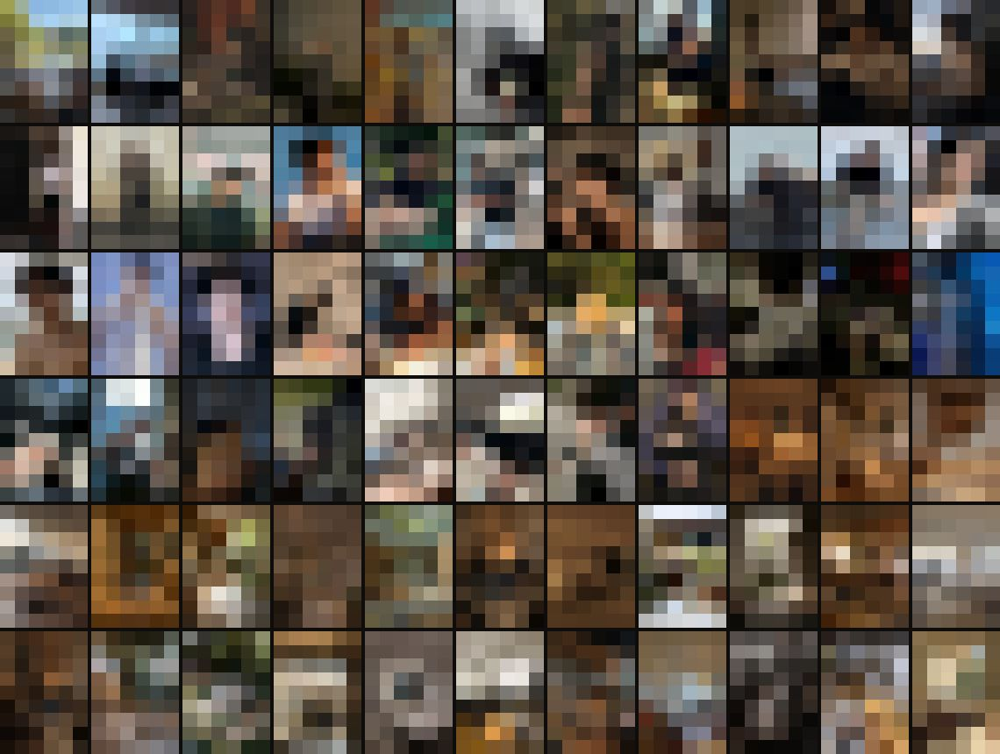
08.16 밤 · v0
파이프는 돈다
일요일 밤 10시 22분, 첫 스모크런. "레퍼런스 파이프라인도 구축돼서 핀터레스트에서 저장한 것들이 자동으로 올라와 있어. 그걸 활용해서 계획 v0 간단 검증해볼까?"
자동 수집된 핀 50장에서 출발해, 이미지 모델 soul_v2로 마스터 후보 4장(seed 101~104) → 승인 게이트 → 5초 세로 영상(kling3_0, 9:16)까지 한 번에 완주했다. 비용 7.98크레딧, 사전 견적과 실제 차감이 끝자리까지 일치. 모든 생성엔 제출 전 선기록과 완료 후 사이드카(JSON)가 남았다. 그날 밤 돌린 적대적 리뷰에서 지적 19건이 나왔고, 전부 반영했다. 수집부터 생성·기록·검증까지 사람 손 없이 돈다는 건 확인된 셈이다.
그리고 결과물을 보고 처음 한 말.
일단 영상은 잘 만들어졌고, 인물 자체는 마음에 안 들어. 우리가 원하는 형태의 얼굴 컨셉은 전혀 아니지만.— 08.16 22:53
판정 기록도 정직하게 갈렸다: 모션과 파이프는 approved:motion-only, 얼굴 컨셉은 rejected:concept-mismatch.
08.17 새벽 · 캐스팅 사가
기록되는 갓챠도 갓챠다
주인공 얼굴을 뽑는 캐스팅. 배치를 세 번 돌렸고 세 번 전부 탈락시켰다.
이 구간의 숫자가 뼈아프다. 이틀간 35장을 생성했고, 그동안 컨셉은 다섯 번 바뀌었다: 합성 캐스팅, 레퍼런스 충실, 두 레퍼런스의 얼굴을 섞는 교배, 권리 있는 얼굴, 그리고 페이스리스. 정작 검증 계획은 한 항목도 전진하지 못했다. 그리고 새벽 4시 5분, 이 프로젝트의 결정적인 발화가 나온다.
이걸 방지할 앱을 만들어서 작업하려고 하는거였고, 앱을 어떻게 만들지를 고민해야 되는데 — 왜 지금 너랑 내가 갓챠 작업을 하고 있는 거지?— 08.17 04:05, 목적 전도 지적
이 지적이 그날 "목적 전도 자기 감사"라는 문서를 낳았다. 에이전트의 자기 판정이 정확했다. 매 배치가 규약(선기록·사이드카·게이트)을 형식적으로 지켰으니 갓챠가 아니라고 착각했다는 것이다. 기록되는 갓챠도 갓챠다. 갓챠의 정의는 기록의 부재가 아니라 확정 없는 반복이다. 감사 문서는 "앱이 있었다면 어디서 막혔을까"를 표로 남겼는데, 그 표가 그대로 제품 설계 입력이 됐다.
| 실제로 일어난 일 | 앱이 있었다면 어디서 막혔을까 |
|---|---|
| 수용 기준 없이 배치 제출 | 배치 제출 폼에 "합격 조건" 필수 필드 — 비면 제출 불가 |
| 전탈락 후 곧장 새 이론으로 재생성 | [전부 탈락] 시 정의 단계 회귀 강제 — "같은 정의로 재생성" 선택지 없음 |
| 채팅 발화로 컨셉 5회 즉시 전환 | 컨셉 변경 = 명시적 회귀 액션 + 기존 산출물 판정 정리 + 캐스케이드 경고 |
| 도구 한계를 실측하고도 같은 도구로 3배치 더 | "이 모델은 얼굴 고정을 지원하지 않습니다" — 도구-목적 불일치 경고 |
| 에이전트는 각 지시에 최적 반응, 시스템 프레임 이탈 | 정의→승인→생성 순서를 UI가 물리적으로 강제 — 선의에 의존하지 않음 |
08.17 03:55
얼굴은 권리다
짜증이 나서 "그냥 레퍼런스 얼굴을 그대로 써라"고 했다 — 그리고 여기서 제동이 걸렸다. 검수 중이던 리뷰어가 레퍼런스 원본 한 장(p24)의 좌하단에서 팬사이트 워터마크를 찾아냈다. 내가 '느좋남 레퍼런스'로 모은 핀들의 정체는 실존 아이돌과 배우의 사진, 그러니까 홈마 직찍이었던 것이다. 위에서 본 첫 게시물의 태그("카메라 정면 응시·얼굴 중심 클로즈업")가 이미 그 사실을 말하고 있었다.
리뷰어의 판정 기준이 좋았다: "이 결과물을 소스 핀 인물의 사진이라고 주장하면 믿기는가? 믿기면 승인 불가." 그리고 에이전트는 그 얼굴로 캐릭터 모델을 학습하는 세팅을 거부했다.
조건은 '어디서 가져왔나'가 아니라 '그 얼굴의 초상권을 갖고 있나'입니다.— 에이전트의 거부, 08.17 03:55
맞는 말이라 반박을 못 했다. 대안의 문은 셋이었다: 본인 얼굴을 찍거나, 라이선스 얼굴을 사거나, 합성 얼굴 하나를 확정하거나. 에이전트는 rights-refs/라는 폴더까지 만들어 "권리 있는 얼굴 레퍼런스를 넣어달라"는 README를 남겼다. 그 폴더는 지금까지 비어 있다. 나는 어느 문도 열지 않고, 3분 뒤에 다른 답을 냈다.
08.17 03:58 · 피벗
페이스리스
지금 인물 레퍼런스 사진을 보면 얼굴이 잘 안 보이는 사진들 있잖아? 하지만 머리스타일이나 이런 것들은 유지할 수 있지? 얼굴이 정면으로 나오지 않고 누군지 알 수 없는 형태로 만들어서 이슈를 피하는 방식으로 진행하자. 어때?— 08.17 03:58
돌아보면 재미있는 대목이 있다. 그 시점까지 모여 있던 인물 핀 25장 중 16장이 이미 얼굴이 안 보이는 컷이었다(인물 핀은 이후 더 쌓여 최종 41장이 된다). 내가 무의식적으로 저장하던 '느좋'은 애초에 얼굴이 아니었던 거다 — 뒷모습, 후드, 어깨 너머, 창가의 실루엣.
기술적으로도 반전이 있었다. soul_v2는 레퍼런스를 주면 장면(구도·조명·의상)은 통째로 재현하면서 얼굴은 자꾸 다른 사람으로 그렸다. 캐스팅 내내 나를 괴롭힌 바로 그 결함이다. 에이전트의 표현을 빌리면: "도구의 '한계'가 장점으로 뒤집힙니다. 일관성 대상이 '얼굴'에서 '헤어+체형+팔레트+공간'으로 바뀝니다."
바로 검증에 들어갔다. 얼굴이 가려진 핀 4장을 골라 앵커로 한 장씩 생성했다. 총 0.48크레딧. 실제 핀과 결과의 대응은 이렇다.
| 레퍼런스 핀 (태그 발췌) | 결과 | 판정 |
|---|---|---|
| p01 — 해안 절벽 통유리창·검은 후드·역광 실루엣·노트북 작업 | fl-p01 (맨 위 배너) | approved |
| p02 — 저조도 카페·모자와 마스크 | fl-p02 | approved |
| p04 — 레코드 진열 공간·후면 3/4 앵글·따뜻한 간접조명 | fl-p04 — 측면 얼굴이 살짝 노출 | rejected · face-visible |
| p06 — 공원 뒷모습·세로형 팔로우미 구도 | fl-p06 | approved |
4장 중 3장 통과, 그리고 탈락한 1장이 더 값졌다. fl-p04의 측면 노출을 보고 face-visible이라는 탈락 태그를 만들고, "식별 불가 게이트"(얼굴이 식별 가능하면 콘텐츠로 쓰지 않는다)를 세웠다.
낮이 되어 컨셉도 정본으로 박았다. 타깃은 한국 남자를 좋아하는 글로벌 여성 시청자, K-드라마에서 볼 법한 인스타 감성의 쇼츠·릴스. 그리고 얼굴 비노출은 여기서 장치가 된다. 여성 인물의 얼굴이 없으므로 시청자가 그 자리에 자신을 넣는다. 컨셉 문서에는 "이입 슬롯"이라고 적었다. 리서치도 이걸 지지했다: 페이스리스 대형 계정은 이미 실증돼 있고(190만·440만 팔로워급), 틱톡에는 "POV: Korean Boyfriend" 허브가 주류로 자리 잡았는데, 정작 페이스리스 '커플' 메가 계정은 못 찾았다. 포지셔닝 공백일 수 있다는 얘기다.
08.17 낮 · 에셋 선행
에셋부터
캐릭터 에셋을 먼저 만들어야 되지 않니? 무조건 생성이 아니라. v0가 정확히 뭘 하려는 건데? 그냥 레퍼런스 던져주고 동영상 만들어지는 건 당연히 되는 기능이잖아?— 08.17 11:11
순서를 다시 세웠다. 씬을 뽑기 전에, 그 씬들이 공유할 에셋을 먼저 확정한다: 캐릭터 시트, 워드로브, 그리고 컷마다 감성 원본이 될 핀. (나중에 안 사실이지만, 28억짜리 AI 영화 팀의 제작 원칙 1번도 정확히 이 문장이다.)
캐릭터 시트 — 얼굴 없는 아이덴티티
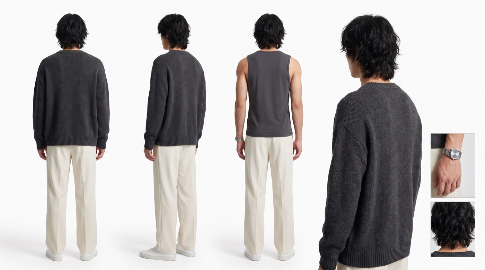
페이스리스 캐릭터의 아이덴티티는 얼굴 대신 헤어 질감·체형·팔레트·소품이 나른다. 그걸 고정하는 게 시트다. 여기서도 실측이 쌓였다. "medium-length wavy hair"라고 쓰면 짧고 단정한 머리가 나온다. 핀 수준의 재현은 voluminous messy medium-long black wavy hair, airy tousled layers, fringe falling over the forehead…처럼 어휘를 이만큼 벼려야 나왔다. "부드러운 실루엣 조명으로 얼굴을 가려라"는 지시로는 측면 얼굴을 못 가렸다. 얼굴 노출은 조명이 아니라 뷰 구성에서 원천 차단해야 한다(얼굴 보이는 측면 뷰 제거, 뒷모습으로 대체). 그리고 규칙 하나: 시트에는 무드를 넣지 않는다. 시트가 나르는 건 아이덴티티 층뿐이고, 무드·조명·장면은 씬 단계에서 핀이 앵커한다.
워드로브 — 핀에서 옷을 벗겨 입힌다
"패션이 마음에 안 들어. 패션 에셋도 우리 레퍼런스에서 뽑아서 적용할 수 있나?" — 그래서 핀에서 착장만 크롭해(얼굴 제외, 턱 아래부터 신발까지) 캐릭터에게 이전하는 실험을 했다.
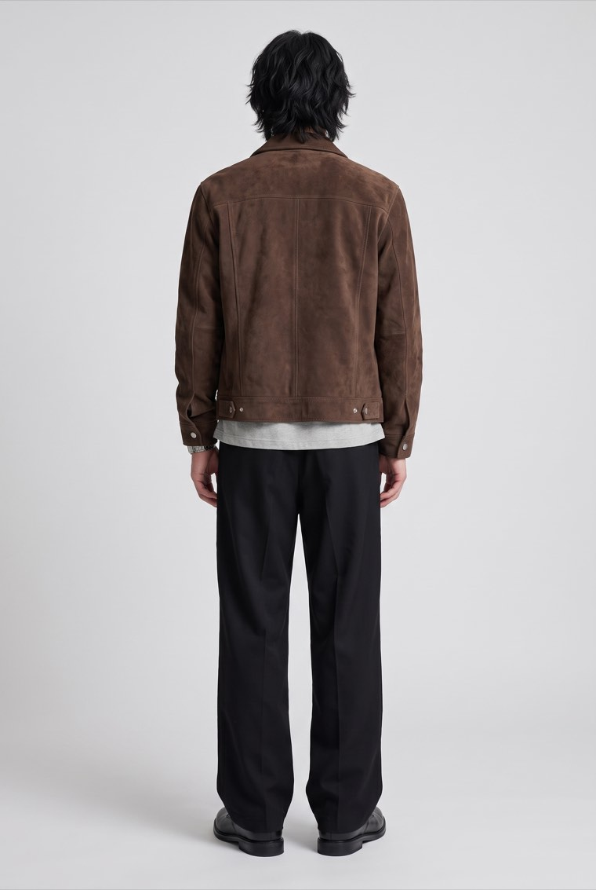
두 번 시도해 두 번 다 첫 샷에 성공했다. 핵심 문법은 셋이었다: 이미지 역할 명시("Image 2 is the garment source"), 보존 지시를 묘사보다 앞에(lock-first), 그리고 색 앵커("exact same color as the reference"). 색은 가장 먼저 도망가는 속성이라 가장 잦은 실패 모드였다. 정면 레퍼런스만 주면 뒷면은 컷마다 제멋대로 지어낸다는 것도 배워서, 의상마다 뒷면 뷰를 한 번 생성해 확정본으로 박아두기로 했다.
슬롯 합성 — 레퍼런스와 똑같으면 의미가 있나
근데 레퍼런스랑 똑같이 만들어지는 것 같은데, 의미가 있어?— 08.17 13:20
정당한 의심이다. 핀을 통째로 앵커하면 재현은 되지만 그건 복제지 창작이 아니다. 그래서 소스를 슬롯으로 쪼개는 프로브를 돌렸다: 캐릭터는 시트에서, 의상은 인물 핀 p25에서("OUTFIT source only"), 장소는 무드 핀 m05에서("SCENE source only"), 행동은 어느 레퍼런스에도 없는 텍스트로: 모카포트로 커피 내리기.
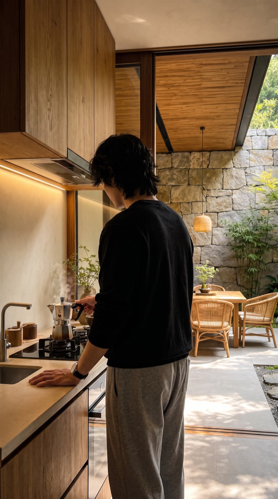
성공. m05의 태그("원목 주방·석재 중정과 대나무·주방 하부 간접조명")가 장소로, p25의 착장(검정 스웨트셔츠·회색 스웨트팬츠)이 옷으로, 시트의 헤어와 시계가 인물로, 그리고 레퍼런스에 없던 모카포트가 행동으로, 각자 제 슬롯에 들어갔다. "Image N is the X source only, ignore…"라는 역할 문장이 슬롯 간 얽힘을 차단했다. 핀을 통째로 베끼지 않고도 새 장면 한 장이 나온 것이다.
같은 날 태그가 문서를 이긴 사건도 있었다. 캐릭터 바이블에 "심플 메탈 시계"를 박아두고 그걸 근거로 리서치의 가죽 스트랩 제안을 기각했는데, 내가 모은 핀들의 시계를 태그로 전수 조사하니 정작 핀 속 시계는 검은 가죽 스트랩이 다수였고, 메탈은 한 장뿐이었다. 바이블이 데이터 쪽으로 개정됐다. 말로 적어둔 취향보다 손으로 모은 취향이 정확했다.
08.17 오후 · ep001 → ep002
잘 나온다. 그런데 그 느낌이 아니다
에셋이 갖춰지고 나서야 에피소드 생산에 들어갔다. ep001 "조용한 저녁" — 도하 솔로 4컷. 스틸 통과율 80%(첫날 캐스팅은 0%였다), 승인 스틸에서 만든 영상 4건은 전부 첫 시도 성공, 규격 오류 0.
그 테이크 4건이 이거다. 직접 판정해 보시라.
지금 것은 영상 자체는 생성 잘 됐지만, 내가 전혀 원하는 느낌의 영상은 아니야.— 08.17 16:13 · 테이크 4건 전건 concept-mismatch
기술 지표가 전부 초록불인데 결과물이 전부 탈락한다. 이게 이 실험이 찾은 진짜 문제다. ep001은 폐기하고 커플 콘텐츠(ep002)로 전환했다. 커플 무드 핀 8장이 시드였다: 무릎베개, 맞잡은 손과 그림자, 엘리베이터 셀카, 소파 포옹.
여기서 예상 못 한 벽 하나 — 모더레이션. 커플 표현("lies embraced")이 제출 시점 텍스트 프리필터에 걸렸다. 순화해도 막혀서 진단해 보니 텍스트가 아니라 핀 이미지 자체(p37, 소파 커플)가 트리거였다. 커플 핀은 이미지별로 통과 여부가 갈렸고(p33·p36·p40 통과 / p37 차단), 차단된 핀에는 "태그 인용 모드"(이미지는 안 넣고 그 핀의 감성·상황·구도 태그를 텍스트로 전문 인용)라는 폴백을 뒀다. 참고로 이 플랫폼의 안전장치는 3층이다: 제출 시 텍스트 프리필터(과금 전 차단) → 생성 후 NSFW 플래그 → 수 초 내 자동 환불.
그리고 이 실험에서 가장 값진 A/B가 나왔다. 같은 모델, 같은 단가(2크레딧). 차이는 하나 — 감성 원본이 될 핀을 지정했는가.
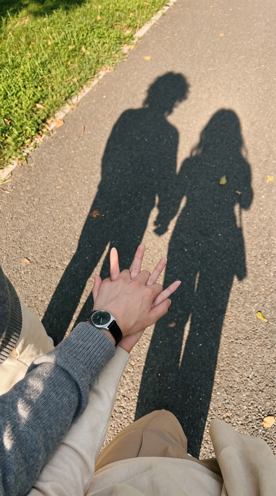
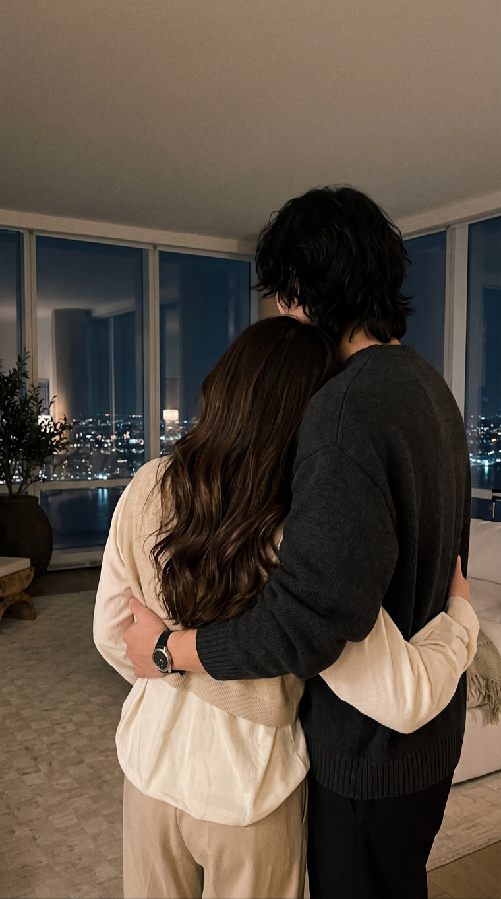
cp-a는 커플 핀 p36을 감성 원본으로 놓은 오마주다. 프롬프트가 핀의 태그를 그대로 카메라 언어로 옮긴다. 핀 태그 "위에서 내려다본 시점·손 중심의 클로즈업·나란히 드리운 두 사람의 그림자·세로 구도"가 결과물에 고스란히 있다. 인물만 도하로 갈아 끼웠다. 승인.
cp-b는 장소 핀(m13, 도시 야경 통창 거실)만 참조하고, 백허그 장면 자체는 텍스트로 구성한 유일한 컷이다. 잘 나왔다. 그리고 탈락했다. 사이드카에는 "감성 원본 규칙의 지지 증거"라는 주석이 남았다.
인물 구도 같은 것을 마음대로 바꾸면 감성이 깨진다.— 08.17 17:06 → 그대로 앱 요구사항 한 줄이 됐다: 씬은 감성 원본(핀)을 지정하고 그 태그를 통과 기준에 인용한다. 구도 보존이 기본값, 추려낼 때 1순위 기준도 원본과의 일치
결론은 한 줄이다. 감성은 핀이 나른다. 텍스트가 아니라. 그리고 저녁 6시 5분 — "영상 생성 그만하자. 잘 나오겠지 당연히." 생성 검증은 여기서 충분하다는 판정이었다.
08.16 – 08.17 · 산출물
산출물 갤러리
기술적으로는 이렇게 나오고 있었다. 생성 스틸 85장 중 각 단계를 대표하는 9장, 판정 그대로.
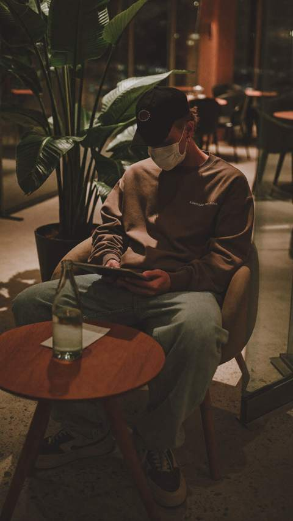
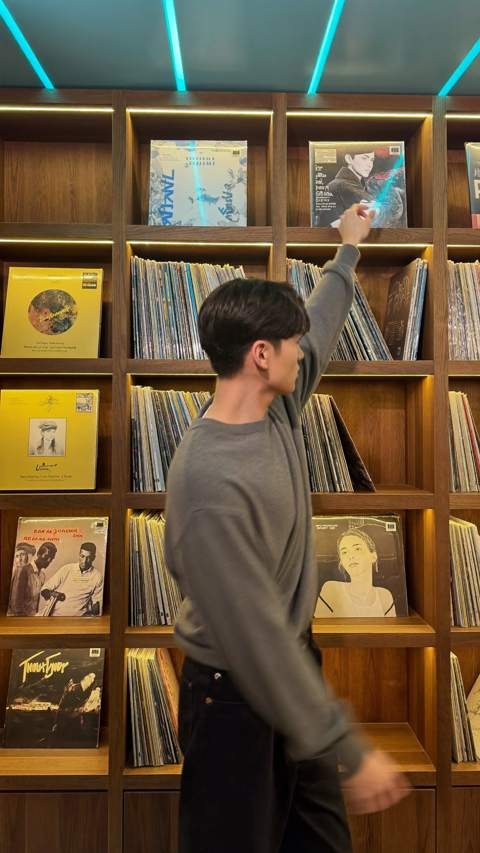
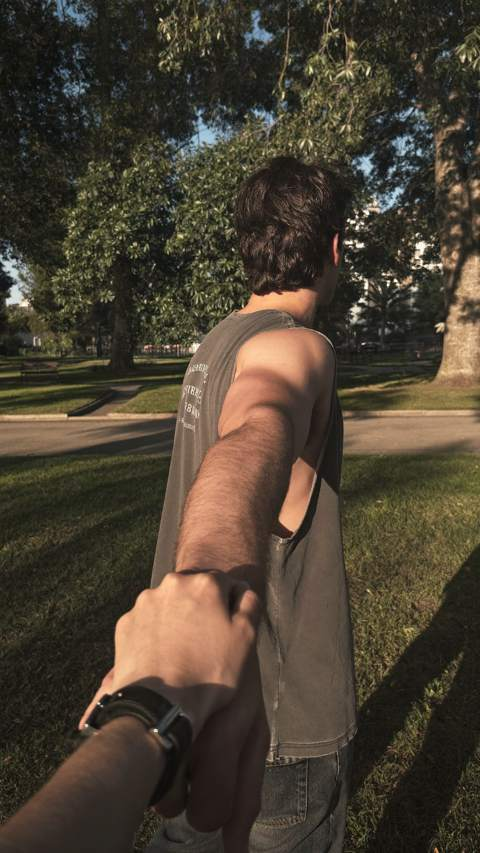
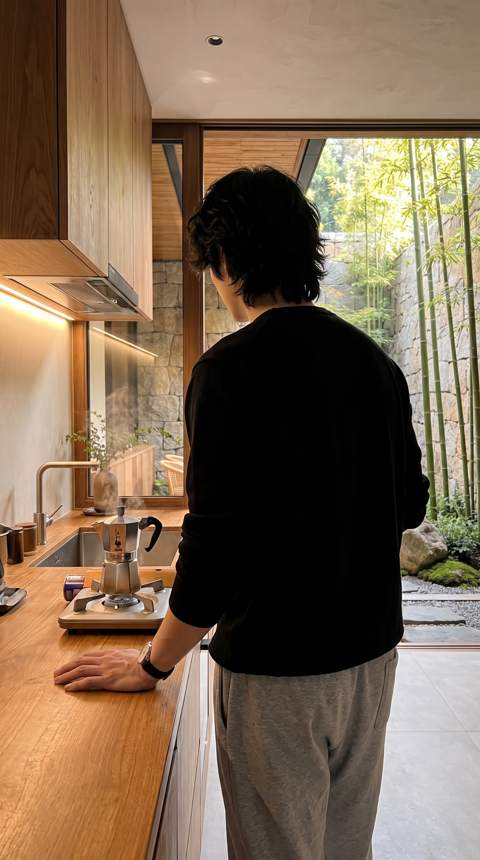
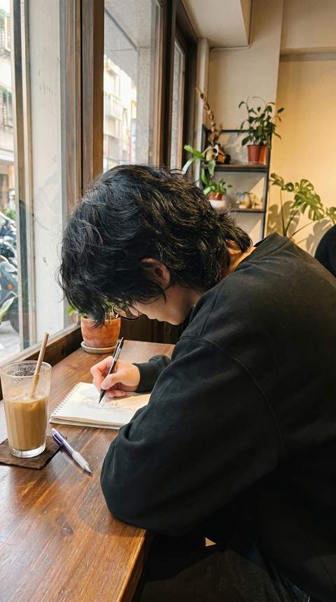
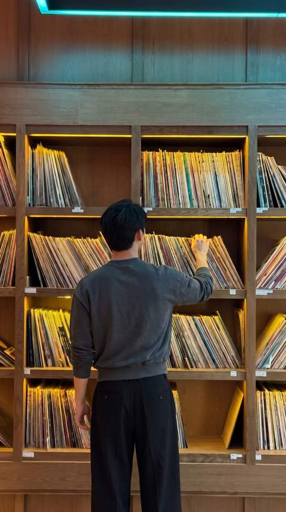
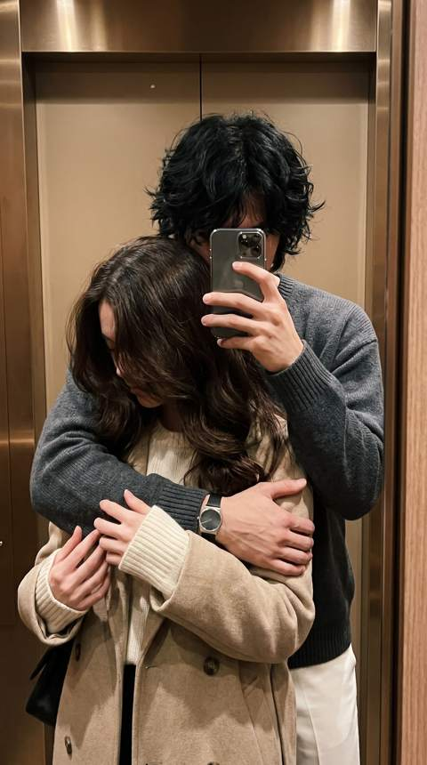
검증의 구조
감성은 누가 판정하나
AI에게 감성 채점표를 쥐여주는 길도 있었다. 가지 않았다. 5일치 세션 기록 어디에도 '루브릭'이라는 단어가 없다. 대신 검증을 두 축으로 쪼갰다.
- 기록 감사 = 에이전트. 바이블 규격과 프롬프트의 대조, 레퍼런스 투입 규칙, 모션 프롬프트 부하 규칙 — 기계적으로 판정 가능한 것 전부.
- 시각 판단 = 인간. 포즈·과처리, 그리고 "이게 그 느낌인가". 에이전트의 역할은 체크리스트를 질문으로 던지고 답을 기록하는 것까지 — 규격 문서의 원문: "에이전트가 영상을 봤다고 주장하는 요구를 남기지 않는다."
ep001이 그 증명이다. 기계가 볼 수 있는 축은 다 통과했고, 사람만 볼 수 있는 축에서 다 떨어졌다.
사람이 계속 고르다 보면 채점 기준을 조금씩 다듬어 나갈 수야 있을 거다. 하지만 그 반복의 재료인 이미지와 영상 생성은 전부 돈이고, 검증 루프에 서 있는 사람은 다시 나다. 인풋 대비 아웃풋이 나오지 않는다.
08.18 · 대조군
28억짜리 대조군
실험을 접기로 한 날 아침, 출근길에 The Cully Hill Boys 리서치를 걸어뒀다. Seedance 2.5로 만든 110분짜리 액션 코미디. 25~28명이 4주 동안 약 28억 원($2M)을 썼고 그 절반이 컴퓨트다. 주연으로 쓴 실존 인물(이스라엘 아데산야 등)의 초상은 전부 정식 라이선스를 받았고, 프롬프트·에셋 1,000개·프로덕션 로그 137건을 플랫폼에서 열람할 수 있게 공개했다. (Forbes · Daily Maverick. 제작 방법론 쪽은 전부 보도 기반이니 감안하고 볼 것.)
그들의 제작 원칙 1번이 "에셋을 전부 확정한 뒤에만 생성을 시작한다"였다. 캐스팅 사가에서 얻어맞으며 배운 것과 같은 문장이다. 초상 라이선스에 돈을 쓴 이유도, 워터마크의 새벽을 지나온 뒤라 몸으로 읽혔다.
그런데 이 리서치에서 가장 쓸모 있었던 건 결함 인정 쪽이다. 그 팀이 완성작의 남은 약점으로 꼽은 것이 인물 간 접촉 연기다. 내 마지막 에피소드가 정확히 그거였다. 무릎베개, 맞잡은 손, 포옹. 게다가 커플 핀은 모더레이션 프리필터에도 걸렸다. 품질과 정책 양쪽에서 좁은 길 위에, 28억을 써도 "모델이 아직 못 한다"고 인정된 지점 위에, 내 컨셉이 서 있었다.
단가 감각도 이 리서치에서 정리됐다. 스틸 1장 2크레딧(nano banana pro 기준), 5초 클립 7.5크레딧, Seedance 2.5의 1080p 10초는 90크레딧. 갓챠 방지를 내걸고 판정 단가를 수십 배로 올리는 모드를 열 수는 없다. 그들은 컴퓨트에만 14억을 썼고, 이 파일럿의 총 지출은 약 94크레딧이었다.
정산
여기서 접는 이유
5일. 핀 66장 태깅, 생성 스틸 85장, 클립 5개, 약 94크레딧, 발행 0편.
파이프라인 검증은 성공이다. 수집부터 기록까지 사람 손 없이 돌고, 실패한 생성은 환불까지 자동으로 잡힌다. 실험은 종료다. 감성 판정이 자동화되지 않았고, 그걸 사람이 메우는 순간 작년과 같은 병목으로 돌아간다.
남긴 것.
- 감성은 핀이 나른다. 말로 설명되는 느낌이었으면 애초에 갓챠가 아니었다. 감성 원본을 지정한 컷은 통과했고, 텍스트로 구성한 컷은 탈락했다. 레퍼런스 파이프라인은 다음 프로젝트가 그대로 쓴다 — 실제로 실험을 접기 38분 전, 같이 작업하는 뮤지션의 핀터레스트 보드가 같은 파이프라인의 세 번째 채널로 합류했다.
- 얼굴은 권리다. 어디서 가져왔는지는 중요하지 않다. 그리고 얼굴을 지웠더니 시청자가 들어올 자리가 생겼다.
- 기술 지표와 '느낌'은 다른 축이다. 전부 초록불이어도 탈락할 수 있다. 그 축의 판정은 아직 사람 몫이고, 그래서 결론은 "많이 보고, 잘 골라라"가 된다.
- 기록되는 갓챠도 갓챠다. 안티갓챠 룰북을 손에 들고도 갓챠를 했다는 사실이, 규약이 아니라 구조가 필요하다는 가장 정직한 근거였다.
그 구조를 지금 SceneBoard라는 macOS 앱으로 만들고 있다. 이 5일이 넘겨준 것들(생성 게이트, 라인업 판정, 감성 원본 규칙, 검증 2축)이 요구사항과 목업으로 옮겨져 있다.
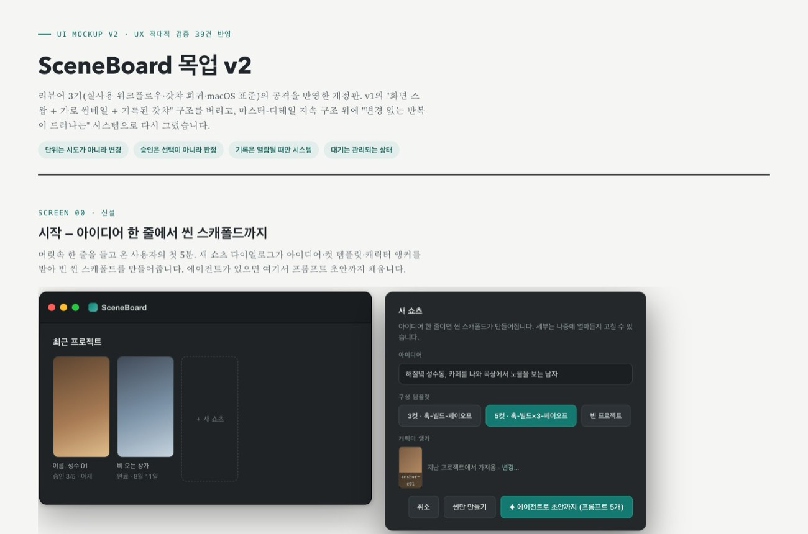
돌아보면 이미지 85장보다 문서가 더 쌓인 실험이었다. 회고 두 편, 리뷰 다섯 번, 프롬프트 가이드 하나. 대부분 그 앱으로 흘러갔다.
느좋 인플루언서 트랙은 여기서 닫는다. 다음 트랙은 원작 텍스트가 이미 존재하는 콘텐츠다 — 감성을 처음부터 발명할 필요가 없는 곳에서, 이 파이프라인이 다시 돈다.